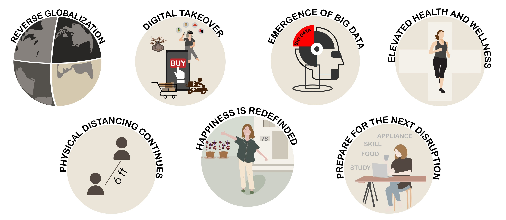

디지털 뉴노멀 시대,
4차 산업혁명기술과 창업
" 디지털 뉴노멀 시대, 코로나19로 인해 변화된 사회, 기술 그리고 우리 일상에서 발생한 문제와 위기를 찾아라!
이를 극복하기 위한 아이디어를 제시하고 나아가 실제 제품과 서비스로 구현하여 문제를 해결하라! "

장기화된 Covid-19 시대에 따라 사람들의 생활 방식, 기업의 운영 방식이 크게 변화하고 고착화되면서 새로운 표준(뉴노멀)이 생겨나고 있습니다. 특히 사람들이 집에서 머무는 시간이 늘어나면서 특히 디지털 분야에서 큰 변화와 빠른 혁신이 일어나고 있습니다.
언뜻보면 기술의 발달이 가속화되는 좋은 기회라고 생각되지만 그 속에선 새로운 문제들이 발생하고 있습니다. 디지털 뉴노멀 시대 속에서 발생하는 문제는 어떤 것들이 있으며, 어떤 방식으로 해결할 수 있을까요? 가톨릭대학교 계절학기 정규 과목 Idea to Action 2nd를 통해 문제를 깊이 생각하고, 자신의 아이디어를 실제로 구현해볼 수 있습니다.